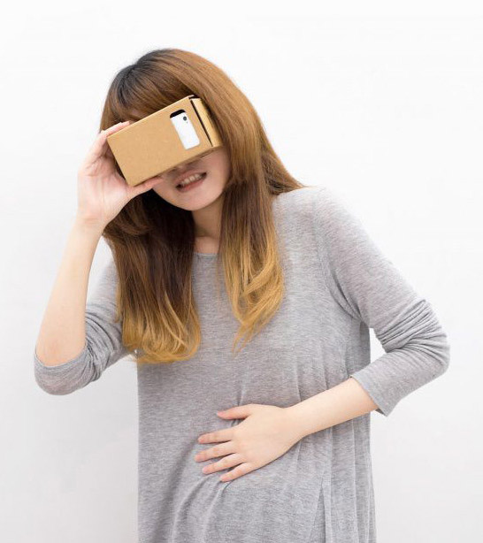

Težave, ki se v VR pojavljajo
Kljub popularnosti VR tehnologije, se je potrebno zavedati težave in izzive, ki jih le-ta prinaša. Navidezno resničnost spremljajo neželeni simptomi, ki so posledica dolgotrajne uporabe navidezne resničnosti. Večina sistemov virtualne resničnosti prihaja z opozorili, vključno z: napadi; razvojna vprašanja pri otrocih; opozorila o potovanjih in padcih; nelagodje; ponavljajoča se poškodba zaradi stresa; in motnje z medicinskimi pripomočki. Nekateri uporabniom se lahko med uporabo VR očal pojavijo simptomi, kot so trzanje, epileptični napadi ali nezavest, čeprav v preteklosti niso imeli epilepsije in še niso imeli podobnih drugih napadov.